Need for Speed: Most Wanted - Cars Description
BMW M3 GTR
O ápice da performance. Esta não é uma BMW comum; é uma máquina de corrida homolgada para as ruas. Possui a aceleração explosiva de um supercarro, uma velocidade de ponta absurdamente alta e uma agilidade que rivaliza com os melhores carros de circuito. Recuperá-la é o objetivo final, pois é, de longe, o carro mais completo e dominante do jogo.
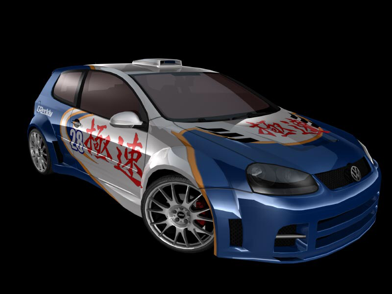
Volkswagen Golf GTI
Um "hot hatch" tunado. É um carro de entrada, ágil e com boa aceleração inicial, perfeito para aprender as mecânicas do jogo. Surpreende pela sua capacidade de manter velocidade em curvas fechadas, mas fica para trás em retas longas contra carros mais potentes.
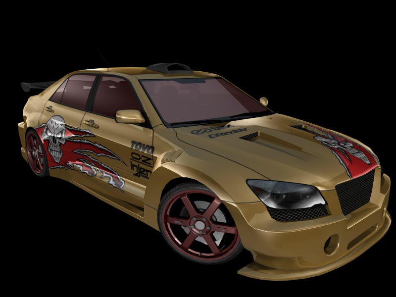
Lexus IS 300
Um sedã de luxo esportivo. Oferece um bom equilíbrio entre conforto e performance, com uma dirigibilidade sólida e previsível. Um oponente estável, mas não espetacular.
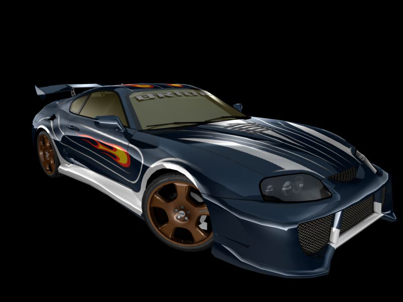
Toyota Supra
Uma lenda do tuning japonês. Famosa por seu motor com enorme potencial de modificação, a Supra é uma fera nas retas, com aceleração forte e velocidade de ponta muito alta.
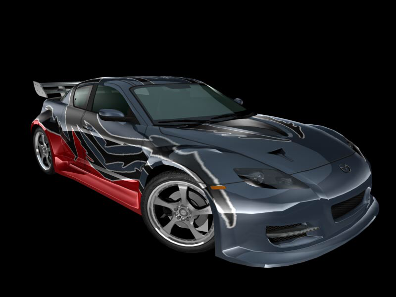
Mazda RX-8
Conhecida por seu único motor rotativo. Oferece uma aceleração suave e linear e é excepcionalmente ágil, brilhando em circuitos técnicos com muitas curvas sequenciais.
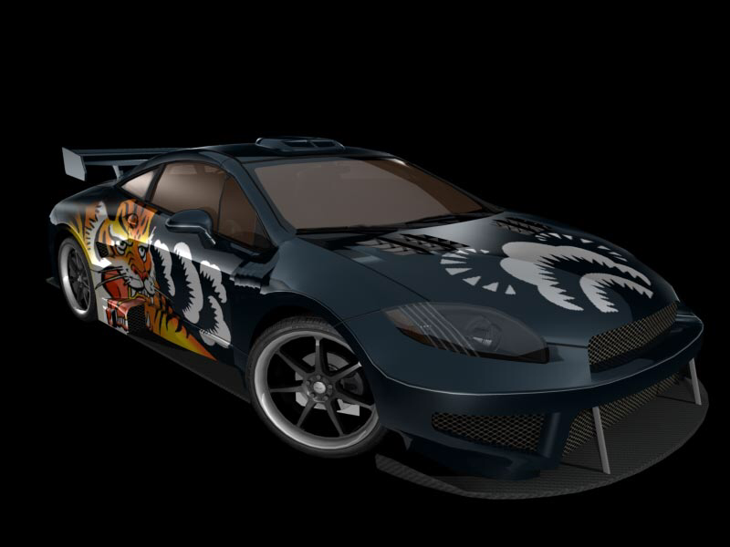
Mitsubishi Eclipse GT
Um cupê esportivo acessível e popular no mundo do tuning. Bem arredondado, com um visual agressivo e desempenho sólido, sem se destacar em uma área específica.
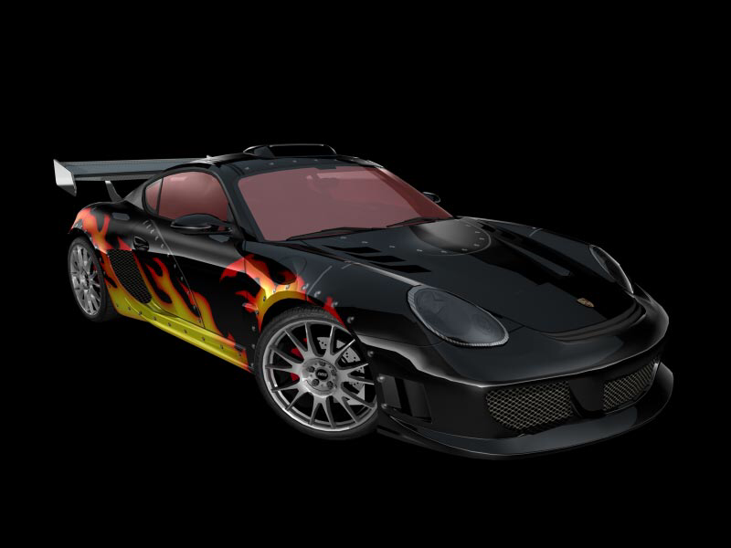
Porsche Cayman S
O mestre do equilíbrio. Com motor central, oferece uma direção precisa e uma capacidade de fazer curvas que poucos conseguem superar. A pureza de sua dirigibilidade é seu ponto mais forte.
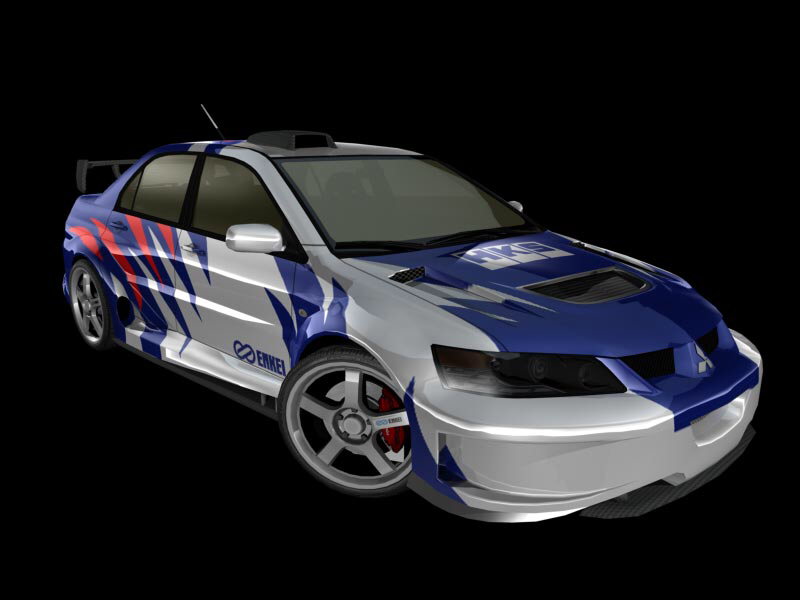
Mitsubishi Lancer Evolution VIII
O "Evo" é uma lenda do rally adaptada para o asfalto. Com tração integral e uma dirigibilidade afiada, é incrivelmente capaz e confiável, especialmente em condições de piso molhado ou em rotas cheias de obstáculos.
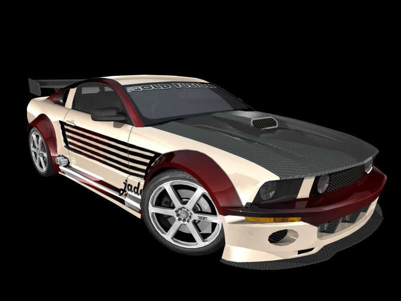
Ford Mustang GT (Jade "Jewels" Barrett)
Puro músculo americano. O Mustang tem um motor V8 que proporciona uma aceleração brutal e um som inconfundível. Lida com retas como nenhum outro, mas sua traseira viva e dirigibilidade mais pesada exigem cuidado nas curvas.
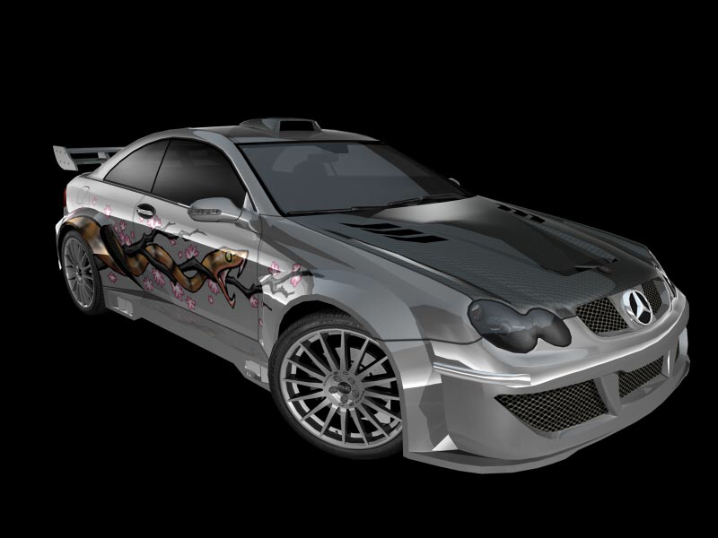
Mercedes-Benz CLK 500
Um grand tourer de alto luxo. É um carro pesado e potente, focado em alta velocidade estável e conforto. Sua força está em manter altas velocidades com elegância, não em agilidade pura.
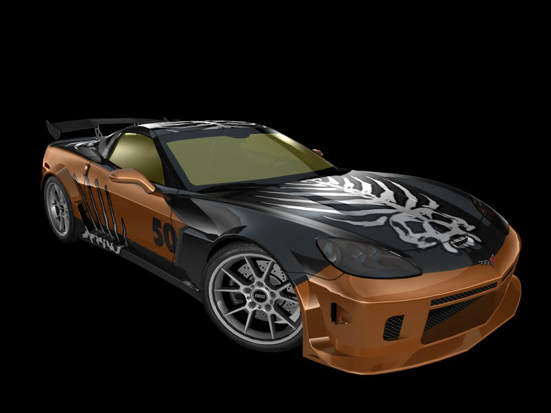
Chevrolet Corvette C6
O rival americano para os supercarros europeus. Leve (graça à fibra de carbono) e equipado com um V8 enorme, o Corvette é devastadoramente rápido em retas e surpreendentemente capaz nas curvas. Entrega performance bruta por um custo (no mundo real) relativamente baixo.
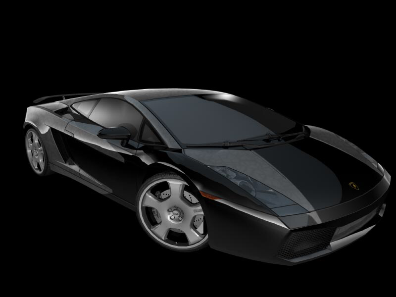
Lamborghini Gallardo
O supercarro acessível, mas ainda assim assustador. Com tração integral e um motor V10 que grita, o Gallardo oferece aceleração alucinante e uma presença de pista avassaladora. Rápido, porém mais "domado" que seus concorrentes de tração traseira.
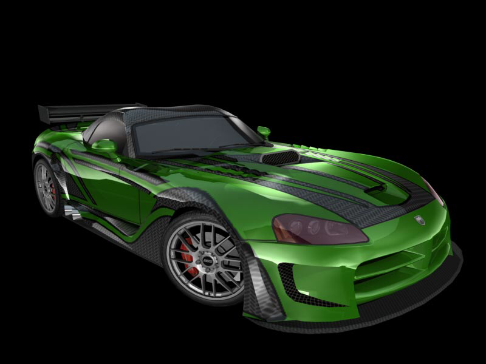
Dodge Viper SRT10
Descrição Geral: O animal selvagem da lista. Com um motor V10 de enorme deslocamento, o Viper é pura potência bruta e torque. Notoriamente difícil de domar, ele desafia o piloto a cada curva, mas recompensa com uma aceleração que prende você ao banco.
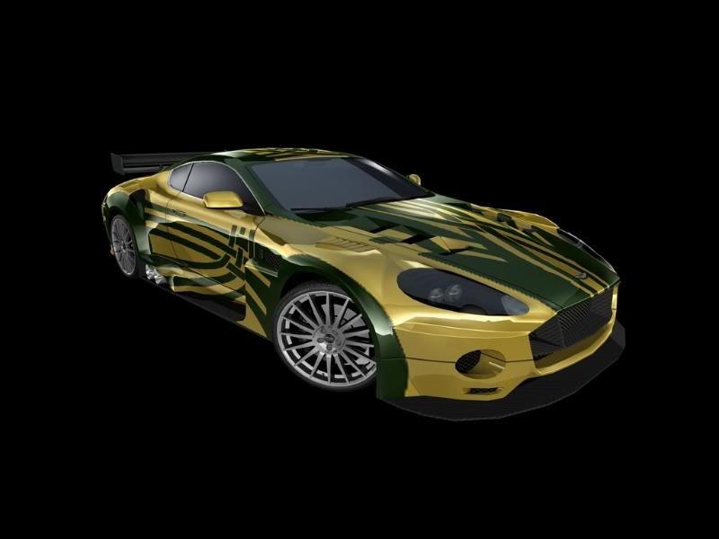
Aston Martin DB9
A combinação perfeita entre força e elegância britânica. Não é o carro mais afiado nas curvas, mas sua velocidade linear, motor V12 aveludado e construção refinada o tornam uma máquina de devorar estradas com classe.
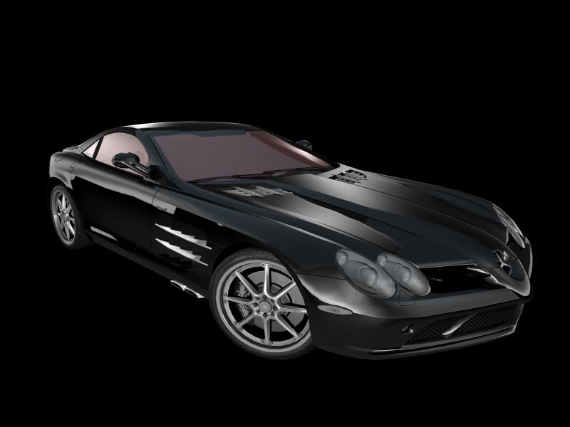
Mercedes-Benz SLR McLaren
Um hypercar de uma era passada, um projeto conjunto da Mercedes e da McLaren. É uma nave espacial. Combinando um motor supercomprimido com uma construção leve, oferece performance crua de outro mundo e uma presença inigualável.
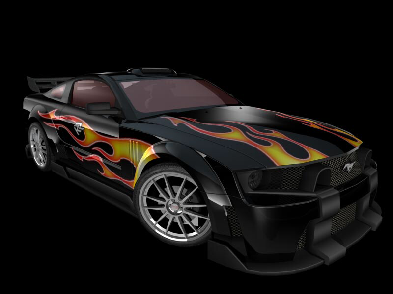
Ford Mustang GT (Clarence "Razor" Callahan)
Uma homenagem ao vilão original. Este não é um Mustang comum; é uma versão altamente modificada e tunada para ser a máquina definitiva de Fairhaven. Ele une a aceleração brutal de um muscle carro com uma agilidade surreal, tornando-o o rival final digno do título.